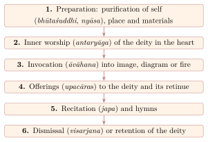

Chapter 9: Ritual: Worship, Fire Offering and the Ritual Body¶
9.1 Introduction¶
The Āgamic and Tantric traditions developed one of the most elaborate bodies of ritual prescription in the history of religions. Ritual (kriyā) is the subject of the largest part of most Āgamas, and of a vast secondary literature of manuals (paddhatis) (Bhatt 1961–1988; Brunner-Lachaux 1963–1998). This chapter describes the main components of Tantric ritual — worship, fire offering, the ritual purification and divinisation of the body, gestures, consecration and expiation — drawing on material common to Śaiva, Vaiṣṇava and Śākta traditions. Initiation is treated in Chapter 2, the Kaula sacraments in Chapter 4, and temple worship in Chapter 11.
9.1.1 Why Ritual Works: Two Śaiva Views¶
The theologians disagreed about how ritual is effective. For the Śaiva Siddhānta, ritual is effective in its own right: since the soul’s bondage is a real substance, it can be removed only by a real act, and in initiation and worship it is Śiva himself who acts through the officiant and the mantras. For the Kashmiri non-dualists, ritual is an expression and support of insight; its efficacy depends on the officiant’s awareness, and for the most advanced it becomes unnecessary or is performed spontaneously (Sanderson 1988). Both positions agree that ritual performed without the prescribed mantras, or carelessly, is defective.
Ritual as Cosmic Process
Tantric authors often interpret a complete rite as a re-enactment of the cosmic process: invocation (āvāhana) corresponds to emanation, worship to maintenance, and dismissal (visarjana) to withdrawal. The worshipper thereby participates in the activity of the deity.
9.2 The Worshipper’s Body¶
A distinctive feature of Tantric worship is that, before worshipping the deity, the worshipper ritually destroys his ordinary body and creates a divine one. This is summarised in the maxim nādevo devam arcayet, “one who is not a god should not worship a god”, and in the Śaiva injunction to worship Śiva having become Śiva.
9.2.1 Purification of the Elements (Bhūtaśuddhi)¶
In bhūtaśuddhi the worshipper visualises the dissolution of the elements of his body, each into the next subtler one, using their seed syllables: earth into water with the syllable laṃ, water into fire with vaṃ, fire into air with raṃ, air into space with yaṃ, and space into its source with haṃ.
The impure body, personified as a “person of sin” (pāpapuruṣa) in many manuals, is burnt away, and a pure body is then recreated in the reverse order.
9.2.2 Nyāsa¶
Nyāsa (“placing”) then installs mantras on the new body, making it a body of mantras (Chapter 7). Its commonest forms are the placing of mantras on the fingers and palms (karanyāsa); the placing of the six “limb” mantras on the heart, head, topknot, chest (“armour”) and eyes, and around the body (“weapon”), with a snap of the fingers (aṅganyāsa; Table 7.1); and the placing of the fifty phonemes of the alphabet on points of the body (mātṛkānyāsa). In some rites the levels of the cosmos are mapped onto the body; the deity’s throne and its supports, or the goddess’s sacred sites, may be installed on it (pīṭhanyāsa); and Śrīvidyā uses an elaborate sixfold sequence of placements (ṣoḍhānyāsa).
9.3 Worship (Pūjā)¶
The core of Tantric worship treats the deity as a royal guest and offers a series of services (upacāras), in five, ten, sixteen or more steps; a common list of sixteen is given in Chapter 3 (Bühnemann 1988). Figure 9.1 sets out the general sequence.

9.3.1 Mental Worship (Mānasapūjā)¶
All Tantric worship includes a phase of inner worship, in which the worshipper visualises the deity in the heart and offers all the services mentally. Many Tantras praise inner worship as superior to outer worship, and in some traditions — notably the Samaya school of Śrīvidyā — it replaces external worship altogether (Padoux 2017).
9.3.2 The Preparation of Space and Materials¶
The place of worship is purified by sweeping, washing and sprinkling; the guardians of the directions are honoured; and a protective enclosure is “bound” with the weapon mantra (often ending in phaṭ) in each direction. Water, flowers, sandal paste, incense, lamps and food are each purified with specified mantras and gestures. Flowers should be fresh and whole, and particular flowers are prescribed for, or forbidden to, particular deities.
9.4 The Fire Offering (Homa)¶
The fire offering continues the Vedic sacrifice within a Tantric framework: the deity is worshipped in the fire, which is itself ritually “born” from the union of the god and goddess of speech, and oblations are offered with the deity’s mantra.
Rites are classified as obligatory daily (nitya), occasional (naimittika) and optional, for a specific desire (kāmya). Optional fire rites are commonly divided into pacifying (śāntika), nourishing or prospering (pauṣṭika) and aggressive (ābhicārika) types, for which the manuals prescribe different directions, colours, times, materials and shapes of fire-pit.
9.4.1 The Fire-Pit (Kuṇḍa)¶
The manuals give detailed rules for constructing fire-pits of various shapes — square, circular, semicircular, triangular, lotus-shaped and others — according to purpose and direction. A standard pit for a single officiant measures one cubit (hasta, roughly 45 cm) a side, surrounded by three raised tiers (mekhalās), with a yoni-shaped projection on one side.
9.4.2 The Structure of a Homa¶
A homa begins with the construction and purification of the fire-pit and the materials and the purification of the officiant. The fire is then generated and consecrated (agnisaṃskāra) as if it were a child born of Śiva and Śakti, with the life-cycle rites of a child, and the deity is invoked into it. Oblations of ghee, sesame, grains or fuel-sticks follow, each with the deity’s mantra; the full oblation (pūrṇāhuti) concludes the offering, and the rite ends with the dismissal of the deity and the distribution of ash and consecrated food.
Vedic mantras continue to be used alongside Tantric ones. One that is frequently recited in fire rites is Ṛgveda 1.189.1 (also Īśa Upaniṣad 18):
Ṛgveda 1.189.1
agne naya supathā rāye asmān viśvāni deva vayunāni vidvān |
yuyodhy asmaj juhurāṇam eno bhūyiṣṭhāṃ te namaüktiṃ vidhema ||
Agni, lead us by a good path to wealth, O god who knows all ways. Keep from us the crooked sin; we would offer you the fullest words of homage.
9.5 Gestures (Mudrā)¶
Mudrās (“seals”) are hand gestures, and occasionally postures of the whole body, that accompany mantras in worship. They are understood both as forms of the deity and as means of acting upon the ritual substances (Table 9.1).
| Mudrā | Form | Use |
|---|---|---|
| Añjali | Palms joined | Salutation |
| Dhenu (“cow”) | Fingers interlocked to resemble a cow’s udder | Making offerings and water into nectar (amṛtīkaraṇa) |
| Avaguṇṭhana (“veiling”) | Hands circling the object | Veiling and protecting consecrated substances |
| Matsya (“fish”) | One hand on the other, thumbs extended like fins | Covering and consecrating water vessels |
| Padma (“lotus”) | Hands open like a lotus | Offering a seat; invocation |
| Yoni | Fingers interlaced to form a triangle | Śākta worship of the goddess |
| Liṅga | Hands clasped with one thumb raised | Śaiva worship |
The term mudrā has other meanings in Tantra: in Kaula usage it may denote the female partner or parched grain (Chapter 4), and in later yoga it denotes bodily techniques for controlling the breath and vital energies.
9.6 Consecration and Bathing (Abhiṣeka)¶
The bathing (abhiṣeka) of an image is part of daily worship and, in elaborate form, of festivals and consecrations. The “five nectars” (pañcāmṛta) are milk, curd, ghee, honey and sugar; other substances commonly used include coconut water, sandal-water, turmeric water, sacred river water and water in which gold or gems have been placed.
9.6.1 Kumbhābhiṣeka¶
The kumbhābhiṣeka (“consecration with pots”) is the great rite of consecration of a new temple or of reconsecration after renovation, conventionally about every twelve years. Over several days, deities are invoked into water-pots (kalaśas) installed in a pavilion with many fire-pits, worshipped with fire offerings and recitation, and finally the consecrated water is poured over the finials of the temple towers and onto the images, transferring the divine presence to them.
9.7 Initiation of Women, Children and the Dead¶
Śaiva scriptures and manuals discuss whether initiation can be given to those who cannot fulfil the obligations of initiates. Many permit the initiation of women, of children and of the sick or aged in the “seedless” form that frees them from the burden of daily ritual, the form that also made Śaiva initiation acceptable to kings (Section 12.4). Some texts restrict women to this form, while the goddess scriptures and the Kaula sources allow them full initiation and even the role of guru (Section 4.14). Initiation also reached beyond death. Śaiva initiates receive their own funerary rites, and Abhinavagupta’s Tantrāloka (chapter 21) describes an “initiation in absence” (parokṣadīkṣā) for the dead, performed with an effigy or with the remains of the deceased, so that a relative who died uninitiated might still be liberated; the Kashmiri authors also describe a yogic departure from the body (utkrānti) by which an advanced practitioner may leave it at will (Sanderson 1988; Brunner-Lachaux 1963–1998). These provisions show both the soteriological ambition of Śaiva initiation and the constraints of caste and gender within which it was usually given.
9.8 Expiation (Prāyaścitta)¶
The Āgamas devote much attention to expiation for ritual faults and pollution, from minor errors in recitation to serious transgressions of the rules of initiates and damage to consecrated images. The remedy is graded to the fault. A minor error in a mantra or in the sequence of a rite is made good by additional recitation; an interrupted worship is begun again with purificatory rites; pollution of the sanctum requires purification and the reconsecration of the space; a breach of the rules of initiation calls for fire offerings, fasting or, in serious cases, re-initiation; and a damaged image must be repaired or replaced and consecrated anew.
9.9 Domestic and Festival Ritual: Two Examples¶
9.9.1 Durgā Pūjā in Bengal¶
The autumn worship of Durgā in Bengal shows Tantric ritual in a public, festive form. Over several days a clay image of the goddess slaying the buffalo demon, flanked by her children Lakṣmī, Sarasvatī, Gaṇeśa and Kārttikeya, is installed in a temporary pavilion. The rites, following Bengali manuals derived from Purāṇic and Tantric sources, begin with the awakening (bodhana) of the goddess, who in the myth was worshipped out of season by Rāma before his battle with Rāvaṇa. A bundle of “nine plants” (navapatrikā) is bathed at dawn and worshipped as the goddess, a survival of agricultural goddess worship; the image is consecrated by the installation of its life-breaths; and daily worship follows with the sixteen offerings, the recitation of the Devīmāhātmya and fire offerings. The “junction worship” (sandhipūjā) at the moment between the eighth and ninth lunar days, when the goddess is believed to have slain the demon, was formerly accompanied in many places by animal sacrifice and is now usually performed with vegetable offerings. On the tenth day the goddess is dismissed and the image immersed in a river or tank.
What was once largely a festival of landed households has become, since the nineteenth century, a great communal (sārbajanīn) celebration organised by neighbourhood committees, and in 2021 UNESCO inscribed Durgā Pūjā in Kolkata on its list of the Intangible Cultural Heritage of Humanity.
9.9.2 Kerala Temple Ritual¶
Kerala’s temples follow a regional Tantric tradition codified in the Tantrasamuccaya of Ceṉṉās Nārāyaṇaṉ Nampūtiri (15th century), which covers the installation and worship of seven deities (Śiva, Viṣṇu, Durgā, Gaṇeśa, Śāstā, Subrahmaṇya and Śaṅkara-Nārāyaṇa). Each temple has a hereditary tantrī, a Nampūtiri Brahmin who holds supreme ritual authority over its consecrations and festivals, while daily worship is performed by other priests. The tantrīs’ authority has been central to modern disputes, such as those over the entry of women of menstruating age into the Śabarimala temple, where the Supreme Court of India ruled in 2018 that their exclusion was unconstitutional, a decision that provoked widespread protest and was referred to a larger bench in 2019. Kerala’s Tantric tradition is described more fully in Section 13.2.
9.10 The Material Culture of Tantric Ritual¶
Tantric ritual is performed with things. The manuals specify not only words and gestures but vessels, lamps, bells, rosaries, seats, cloths and diagrams, the materials from which they are to be made (gold, silver, copper, bronze, clay, wood) and their dimensions. These objects are not neutral equipment: before use they are purified and consecrated with mantras, and several of them are themselves worshipped as seats or forms of deities.
9.10.1 Implements of Worship¶
Water-pots. The kalaśa or kumbha, a pot filled with water, wound with thread and crowned with leaves and often a coconut, serves as a temporary seat of the deity in consecrations, festivals and domestic rites (Section 9.6). In Śākta worship a special vessel of offering (viśeṣārghya), set on a tripod and itself worshipped, is the centre of the ritual; in Kaula forms it contains alcohol or a substitute.
The conch. In Vaiṣṇava and Śākta worship the conch (śaṅkha) is filled with water, worshipped and used to bathe the image; it is also blown at the opening of worship.
The bell. The hand-bell (ghaṇṭā) is rung at the bathing of the image and the offering of incense and lamp, to drive away obstructive beings and to summon the gods. Its handle is topped by the emblem of the deity: the bull Nandi for Śiva, Garuḍa or the discus for Viṣṇu. In Buddhist Tantra the bell is paired with the vajra, held in the left and right hands respectively, as symbols of wisdom (prajñā) and method (upāya).
Lamps. Single lamps burn before the deity; lamps of many wicks, sometimes tiered, are waved before it in the rite of ārati at the climax of worship.
The rosary. The japamālā or akṣamālā usually has 108 beads with a further “summit” bead (meru) that is not passed over: on reaching it the reciter turns the rosary back. Traditions prefer different materials — rudrākṣa for Śaivas, tulasī wood for Vaiṣṇavas, crystal, coral or lotus seeds for particular goddesses and purposes — and in Kāpālika and some Vajrayāna practice beads of human bone were used.
The guru’s sandals. The pādukās of the guru are worshipped as his presence; in Śrīvidyā the word also names the mantras of the lineage of teachers.
Diagrams. Engraved metal plates and three-dimensional merus serve as permanent seats of deities in domestic shrines and temples (Chapter 8).
9.10.2 Insignia of the Fierce Deities¶
A distinct group of objects belongs to the fierce deities and to the ascetics who imitated them: the skull-bowl (kapāla); the skull-topped staff (khaṭvāṅga); the hourglass-shaped drum (ḍamaru); the chopper or flaying knife (kartṛkā); the trident (triśūla); the noose (pāśa) and goad (aṅkuśa); garlands of heads and ornaments of bone. For the Kāpālika ascetics these were real possessions (Section 2.1.6); in the Hindu traditions today they appear mainly as attributes in images, though some Aghorī ascetics still carry skull-bowls. In Tibetan and Newar Buddhism many survive as ritual objects. The ritual dagger (kīla), which became central to Tibetan rites, derives from Indian rites of “nailing” (kīlana), in which pegs are driven into the ground to fix the boundaries of a ritual space and to pin down obstructive forces.
9.10.3 From Meditation Verse to Image¶
Each Tantric deity is described in a “meditation verse” (dhyāna), which gives its colour, faces, arms, attributes, posture, ornaments and mount. The worshipper visualises the deity according to this verse before invoking it, and the same verses guided sculptors and painters. Digests such as the Śāradātilaka and Kṛṣṇānanda’s Tantrasāra, and Buddhist collections of sādhanas, contain hundreds of such descriptions, and much of the iconography of medieval temples can be read through them (Bühnemann 2003).
The fierce deities have a recognisable visual language.
Bhairava appears naked or nearly so, smeared with ash, with fangs and flaming hair, holding a skull-bowl, trident, drum and sometimes a severed head, and accompanied by a dog. Eight Bhairavas — Asitāṅga, Ruru, Caṇḍa, Krodha, Unmatta, Kapāla, Bhīṣaṇa and Saṃhāra — guard the directions and the sacred sites.
Cāmuṇḍā, the most terrible of the Mothers, is emaciated, with sunken eyes and belly and visible ribs, often seated on a corpse and wearing a garland of skulls. In many temples the seven Mothers (saptamātṛkā) are carved in a row, flanked by Vīrabhadra or Śiva and by Gaṇeśa.
Kālī is dark, naked or clad in a tiger skin, with a lolling tongue, a garland of severed heads and a girdle of arms, standing on the prostrate Śiva (Figure 4.1).
Yoginīs, often animal-headed, stand or sit on their vehicles (Section 4.10); the Buddhist herukas and ḍākinīs share much of this repertoire (Chapter 10).
The general principles of Indian iconography and image-making are treated in Volume 16, Vāstu–Śilpa. What is specific to the Tantric deities is that their terrifying features express their power over death, impurity and the forces of disorder — the same power that the practitioner seeks to make his own.
9.10.4 Painted Images and Diagrams¶
Painting served Tantric ritual in several ways. Temporary maṇḍalas of coloured powder were drawn for initiations and erased afterwards (Chapter 8); painted scrolls served as permanent supports for visualisation and worship. In the Kathmandu Valley Newar painters produced scroll paintings (paubhā) of maṇḍalas and deities for both Hindu and Buddhist patrons, and Newar artists worked widely for Tibetan monasteries; the most famous of them, Anige (1245–1306), led a group of Newar craftsmen to Tibet and then to the court of Khubilai Khan, where he directed imperial workshops of painting and sculpture. Tibetan scroll paintings (thangka) developed from these Indian and Newar models. In India itself, painters of the Rajput and Pahari courts illustrated the goddesses of the Śākta tradition, including series of the ten Mahāvidyās, and painted cosmological and yogic diagrams for Tantric practitioners and their patrons, such as the Nāth paintings of Jodhpur (Section 13.8). These works were made to guide meditation or to be worshipped; their later display as “art” is a modern development (see below).
9.10.5 Manuscripts as Sacred Objects¶
Tantric manuscripts were themselves ritual objects. Because the scriptures were restricted to initiates, manuscripts were kept within lineages and monasteries, worshipped and copied as acts of merit; the Śaiva Śivadharma literature describes the solemn gift of a manuscript to a temple or monastery as one of the greatest of donations (De Simini 2016). Palm-leaf manuscripts of Buddhist and Hindu Tantras from eastern India and Nepal were often protected by painted wooden covers depicting the deities of the text. This culture of reverent preservation, especially in Nepal, is the reason so many early Tantras survive at all (Section 1.7).
9.10.6 Tantric Objects in Museums and Modern Art¶
In the twentieth century Tantric objects and paintings found a new audience as art. The collector and writer Ajit Mookerjee presented yantras and Rajasthani diagrammatic paintings as Tantra Art (Mookerjee 1966), and Philip Rawson’s exhibition “Tantra” at the Hayward Gallery in London in 1971, with his book The Art of Tantra, brought them to Western audiences, where their geometric abstraction appealed to modernist taste (Rawson 1973). Several Indian painters, among them G.R. Santosh, Biren De and S.H. Raza, drew on Tantric diagrams in what critics called a “neo-Tantric” style. The British Museum’s exhibition Tantra: Enlightenment to Revolution (2020) set such objects in a historical narrative that ran from early medieval scripture to colonial politics and the counterculture (Ramos 2020). Displays of this kind have done much to make the traditions visible; they also detach objects from the ritual contexts that give them meaning, and can reinforce the romantic image of Tantra that this volume has tried to correct (Section 14.4).
9.11 Vedic and Āgamic Ritual¶
Table 9.2 compares the two forms of ritual.
| Feature | Vedic śrauta ritual | Āgamic ritual |
|---|---|---|
| Central act | Fire sacrifice (yajña) | Worship of a deity in an image, diagram or fire (pūjā) |
| Officiants | Specialised priests (hotṛ, adhvaryu, udgātṛ, brahman) | Initiated priest or the initiate himself |
| Deities | Many gods (Agni, Indra, Soma and others) | A supreme deity with its retinue |
| Mantras | Vedic verses and formulae | Āgamic mantras, including seed syllables, alongside Vedic ones |
| Space | Temporary altar | Temple or domestic shrine; temporary diagrams |
| Eligibility | Twice-born men | Initiates, in principle of any caste and sometimes women |
| Body of the officiant | Purified | Purified and ritually divinised |
Āgamic authors generally presented their ritual as continuous with the Vedic heritage and suited to the present age (kaliyuga), in which the great Vedic sacrifices had largely fallen out of use. Historically, temple and image worship did largely replace public Vedic sacrifice as the dominant form of Hindu religious practice in the first millennium CE, while the Vedic domestic rites continued alongside it.